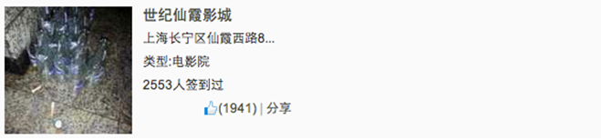

默认图片
圆角图片
圆形图片
缩略图
响应式图片
为了使非标题元素具有标题元素的性质，还有 .h1-.h6六个类名,比如：
bootstrap 使用<small>标签作为副标题
p元素设置有外边距，默认为行高，定制距离可以在编译版中的variables.scss中修改
我是一个段落
如果要突出显示某段文字，可以为其添加类.lead ，p，比如：
我是一段普通的文字
我是一段突出显示的文字
此外，还可通过<small>,<strong>, <em>, <cite>标签突出文本
通过使用 <b>和<strong>元素为文本加粗，两者效果一样。比如：
我在学习bootstrap我要掌握bootstrap
通过<i>和<em>标签使文本呈现斜体，比如：
我正在学习bootstrap ，还没发现bootstrap的强大
除了使用<strong>和<em>标签外，还可以使用不同的类名突出文字
.text-muted: 提示，浅灰色（#999）.text-primary : 主要，蓝色（#428bca）.text-success: 成功，浅绿色(#3c763d).text-info: 通知消息，浅蓝色(#31708f).text-warning: 警告，黄色（#8a6d3b）.text-danger: 危险，褐色（#a94442） 对于left, center, right, justify四种文本对齐风格，bootstrap提供了四个相应的类名：
.text-left.text-center .text-right.text-justify我左对齐
我居中对齐
我右对齐
我自动对齐
bootstrap 将列表分为了6类：
bootstrap对有序列表和无序列表只在margin上做了调整
普通列表：
有序列表
有序嵌套列表
为ul和ol加上类.list-unstyled就可去掉列表的默认样式，并且去掉了列表默认的左边距：
类名为.list-inline, 实现列表项水平排列，适用于导航条制作,
并且还为各列表项增加了左右各5px的padding:
城市：
对于定义列表，bootstrap没做太多调整，只是调整了行间距，外边距和字体加粗效果
实现类：.dl-horizontal。定义列表水平显示
bootstrap提供了3种风格来显示代码
code风格：
<code>，<pre>，<code>(defun fact (n) if(n<=1) 1 (* n (fact (- n 1))))
ctrl+c复制代码ctrl+v粘贴代码 使用pre风格时，如果代码过长，可添加类.pre-scrollable,来实现高超过340px后出现滚动条
bootstrap为表格提供了1种基础样式，4种附加样式，和1种响应式样式，对应的类为：
.table: 基础表格.table-striped: 斑马线表格.table-bordered: 带边框表格.table-hover: 鼠标悬停高亮表格.table-condensed: 紧凑型表格.table-responsive: 响应式表格bootstrap还为表格行元素<tr>提供了不同类，控制不同行的颜色：
.active.success.info.warning.danger| 类名 | 描述 | 对应颜色 |
|---|---|---|
| .active | 表示当前活动的信息 | #f5f5f5 |
| .success | 表示成功或者正确的行为 | #dff0d8 |
| .info | 表示中立的信息或者行为 | #d9edf7 |
| .warning | 表示警告，需要特别注意 | #fcf8e3 |
| .danger | 表示危险或者可能错误的行为 | #f2dede |
bootstap对<table>没做任何修改，要得到基础表格，需加上类名.table
| 表格标题 | 表格标题 | 表格标题 |
|---|---|---|
| 表格单元格 | 表格单元格 | 表格单元格 |
| 表格单元格 | 表格单元格 | 表格单元格 |
只需在.table的基础上加上类.table-striped。效果：tbody上隔行有浅灰色背景。注意：在IE8及以下无效。
| 表格标题 | 表格标题 | 表格标题 |
|---|---|---|
| 表格单元格 | 表格单元格 | 表格单元格 |
| 表格单元格 | 表格单元格 | 表格单元格 |
与斑马线表格的使用方法一样，在.table的基础上加上.table-bordered类即可。效果：整个表格具有边框效果
| 表格标题 | 表格标题 | 表格标题 |
|---|---|---|
| 表格单元格 | 表格单元格 | 表格单元格 |
| 表格单元格 | 表格单元格 | 表格单元格 |
类名：.table-hover。效果：鼠标悬浮在某行时，该行背景为浅灰色。
| 表格标题 | 表格标题 | 表格标题 |
|---|---|---|
| 表格单元格 | 表格单元格 | 表格单元格 |
| 表格单元格 | 表格单元格 | 表格单元格 |
类名：.table-condensed。效果：重置单元格内边距，使正跟表格看起来更紧凑。（添加边框看起来更明显）
| 表格标题 | 表格标题 | 表格标题 |
|---|---|---|
| 表格单元格 | 表格单元格 | 表格单元格 |
| 表格单元格 | 表格单元格 | 表格单元格 |
以上效果可以混合使用，并且不管制作那种表格都离不开类.table：
| 表格标题 | 表格标题 | 表格标题 |
|---|---|---|
| 表格单元格 | 表格单元格 | 表格单元格 |
| 表格单元格 | 表格单元格 | 表格单元格 |
| 表格单元格 | 表格单元格 | 表格单元格 |
| 表格单元格 | 表格单元格 | 表格单元格 |
实现原理：将具有类.table(.table-bordered...)
的表格置于类为.table-responsive的<div>元素中。效果：当屏幕宽度小于786px时，表格底部出现滚动条，大于时滚动条消失。
| 表格标题 | 表格标题 | 表格标题 |
|---|---|---|
| 表格单元格 | 表格单元格 | 表格单元格 |
| 表格单元格 | 表格单元格 | 表格单元格 |
| 表格单元格 | 表格单元格 | 表格单元格 |
| 表格单元格 | 表格单元格 | 表格单元格 |
表单中常见的元素包括：
对于<fieldset>，<legend>，<lable>元素，bootstrap对margin，padding和border做了细化设置。
对于<input>，<select>，<textarea>等元素，
如果加上类名.form-control就会产生定制效果：
bootstrap表单默认为垂直风格，要实现水平需满足以下条件:
.form-horizontal 添加类.form-horizontal有以下效果
.form-group的表现形式，类似于网格系统的"row" 效果：表单所有控件都在一行内显示。
类：.form-inline
注意
.form-group内.sr-only不会显示，放置的目的是方便屏幕阅读器。需要指定input元素的type类型，如果没有，不能得到正确样式。
为了让控件在各种表单风格样式不出错，需要添加类名.form-control。
<select>添加类名.form-control包裹在类为.form-group的<div>中。
multiple选项保持不变，自定义。
设置rows可定义高度，设置cols可定义宽度。
不过如果在<textarea>添加类.form-control则无需设置cols，bootstrap将其宽度设置为100%或auto
checkbox和radio与其label的对齐很头疼， 这在bootstrap中得到了解决， 实现步骤：
.checkbox的容器内.radio的容器内。
（bootstrap主要借助.checkbox和.radio来处理对齐方式。）bootstrap实现复选框和单选框水平排列原理：
.checkbox-inline.radio-inline 高度控制：可以通过设置height，line-height，padding和font-size 控制控件高度。
不过bootsrtrap提供了两个类名来控制控件高度：
.input-sm：比正常大小更小.input-lg：比正常大小更大这两个类名仅适用于<input>，<select>和<textarea>控件。
宽度控制：借助bootstrap的网格系统，可设置控件的宽度。
.form-horizontal形式，通过在.form-group中的包裹div设置网格系统实现控制控件宽度。.form-group相当于网格系统中的.row。 使用bootstrap时，要让表单控件出现焦点效果，需要在控件上添加类.form-control
实现原理：为焦点状态添加伪类:focus
file，radio，checkbox控件与普通input控件不一样，不需要加.form-control类。源码：
input[type="file"]:focus,
input[type="radio"]:focus,
input[type="checkbox"]:focus {
outline: thin dotted;
outline: 5px auto -webkit-focus-ring-color;
outline-offset: -2px;
}我是正常状态：
disabled即可。背景会变成灰色，且会出现不准输入的手形。disabled属性，而没有添加类.form-control，控件只会改变背景颜色，而不会出现不可输入的手形：fieldset设置了disabled属性，整个域都会是禁用状态：bootstrap为表单验证状态提供了下面效果：
.has-warning：警告信息（黄色）.has-error：错误信息（红色）.has-success：成功状态（绿色）使用时，是在.form-group上添加相应状态类名。并且相应的lable元素要添加类.control-label
如果要想在提示时在input框内加上图标，还需要在.form-group后面加上类.has-feedback
并且在input后需加上一个span元素，其类名为.glyphicon.glyphicon-?.form-control-feedback其中?号代表：
.glyphicon-ok：成功 .glyphicon-warning-sign ：警告.glyphicon-remove：错误 表单验证时需要提示信息时，可以在图标span和input中间添加类为.help-block的span。
默认在输入框底部，不过可以通过网格设置，放在input后面：
实现按钮通常有如下方法：
不过bootstrap中实现按钮都是采用<button>来实现。
只需在button元素添加类.btn就可实现基本按钮：
在.btn 的基础上添加类.btn-default就可实现默认按钮。
改变了背景颜色和文本颜色
可以使用任何元素制作按钮风格，只需为其添加与button制作按钮时相同的类即可。
不过为了兼容考虑，强烈建议只使用button和a标签制作按钮。
a标签按钮 span标签按钮 bootstrap通过改变padding，line-height，font-size和border-radius实现对按钮大小控制。
可以在.btn 的基础上添加3种类实现对按钮大小的控制
.btn-lg：变大...：正常.btn-sm ：变小.btn-xs ：超小 如果需要按钮块状显示，并且充满整个父容器（width:100%），添加类名.btn-block。
| 类名 | 阐述 | 描述 | 效果 |
|---|---|---|---|
.btn. | 基础按钮 | 基础按钮风格 | |
.btn.btn-default | 默认按钮 | 默认按钮风格 | |
.btn.btn-primary | 主要按钮 | 提示当前按钮在一系列按钮中为只要操作 | |
.btn.btn-success | 成功按钮 | 表示成功或积极动作 | |
.btn.btn-info | 信息按钮 | 可以用来替换默认按钮 | |
.btn.btn-warning | 警告按钮 | 提醒用户操作需谨慎 | |
.btn.btn-danger | 危险按钮 | 提醒用户操作非常危险 | |
.btn.btn-link | 连接按钮 | 把按钮转化为链接风格，看起来像一个连接 |
3.7 按钮禁用状态
有两种实现方法：
disabled属性.disabled 效果:
如果需要多个按钮水平排列，可以将它们放置在类名为.btn-group 的容器中：
只需在按钮组类.btn-group后追加相应类就可实现控制按钮组大小：
.btn-group-lg大按钮组 .btn-group-sm小按钮组.btn-group-xs超小按钮组大型按钮组：
小型按钮组：
超小型按钮组：
富文本编辑器中，要实现工具栏分组排列（如下图），可在多个.btn-group的外层包裹.btn-toolbar。（.btn-toolbar>btn-group*?）

比如：
基本结构： .button-group>(button.btn.btn-default)*? + (.btn-group> (button.btn.btn-default[data-toggle="dropdown"] > span.caret) + ul.dropdown-menu>li*?
单个实现：
如果需要垂直结构，只需将最外层.btn-group替换为.btn-group-vertical即可：
效果：整个按钮组充满父容器，每个按钮宽度均分。
实现方法：在.btn-group基础上追加类.btn-group-justified即可。
注意：制作等分按钮时，尽量使用<a>来制作按钮。因为display:table在部分浏览器中支持不友好。
如果需要菜单向上弹出，并且小三角形图标指向上方，只需在最外层.btn-group上追加类.dropup即可：
bootstrap中的图片样式有以下几种风格：
.img-responsive响应式图片，主要针对响应式设计.img-rounded圆角图片.img-circle圆形图片.img-thumbnail缩略图 设计图片大小：
由于没有对图片大小作限制，所以在实际使用时需要通过其它方式改变图片大小，比如设置容器大小（？）。不可通过css直接改变图片大小，这样就没有响应效果。
bootstrap中的小图标通过css3的@font-face制作。来自 glyphicons.com。可免费使用。
任何内联元素都可以用来制作小图标。使用时需要添加类.glyphicon，再根据需要添加特定形状的类。比如.glyphicon-search：
缩略图 常用在网站中的产品展示区域，一行显示多张图片，有的图片周围还有描述信息等。
基本结构：.row > .col-?-? > a.thumbnail[href=?] > img
注意：要与网格结构结合使用：
为缩略图添加描述内容：在.thumbnail前/后紧跟.caption。在其中就可添加各类文本描述信息：
注意：下拉菜单依赖bootstrap.js。所以使用前需引入jquery.js和bootstrap.js
实现过程：
.dropdown的容器包裹整个下拉菜单，比如：<div class="dropdown"></div>
.dropdown-toggle。自定义属性data-toggle其属性值必须和最外层类名相同。data-toggle="dropdown"
.caret的span元素，用来制作箭头图标。.dropdown-menu<ul class="dropdown-menu">
例：
.dropdown-menu默认为隐藏模式。源码：
.dropdown-menu {
position: absolute;/*设置绝对定位，相对于父元素div.dropdown*/
top: 100%;/*让下拉菜单项在父菜单项底部，如果父元素不设置相对定位，该元素相对于body元素*/
left: 0;
z-index: 1000;/*让下拉菜单项不被其他元素遮盖住*/
display: none;/*默认隐藏下拉菜单项*/
float: left;
min-width: 160px;
padding: 5px 0;
margin: 2px 0 0;
font-size: 14px;
list-style: none;
background-color: #fff;
background-clip: padding-box;
border: 1px solid #ccc;
border: 1px solid rgba(0, 0, 0, .15);
border-radius: 4px;
-webkit-box-shadow: 0 6px 12px rgba(0, 0, 0, .175);
box-shadow: 0 6px 12px rgba(0, 0, 0, .175);
}当点击div.dropdown时，为其toggle类.open。
.open > .dropdown-menu {
display: block;
}假设下拉菜单中有多个分组，可以添加一个空<li>元素，并设置类.divider。
既然可以将下拉菜单分成多组，就可以给每组加上不同标题。方法为：也是增加一个空<li>元素，并设置类.dropdown-header。
下拉菜单默认与父元素左对齐。如果需要右对齐：在.dropdown-menu上添加一个类.pull-right或.dropdown-menu-right两者效果一样。同时设置对应的.dropdown为 float: left。
与.dropdown-menu-right相对应的就是.dropdown-menu-left即默认的左对齐。
我是默认左对齐的下拉列表：
添加.full-right类使菜单与父容器右对齐
直接使用.dropdown-menu-right代替.pull-right：
直接使用.dropdown-menu-left获得默认左对齐：
（以上效果设置浮动后有点乱）
默认菜单项鼠标悬浮时有样式改变，其通过:hover和:active伪类设置。此外还可以为它们设置.active 和.disabled获得不同效果
见第四章
bootstrap将整个可视区域分为12等分。不过也可根据自己需要重新编译将修改份数，比如24或32，不过不建议这样使用。
基本结构 .container > (.row > .col-?-? * ?) * ?
工作原理：
.row 必须包含在容器.container中，以便为其赋予对齐方式和内边距。如：<div class="container"> <div class="row"></div> </div>
.row中可以添加.col-?-?，但数列之和不能超过平分的总列数，比如12。<div class="container"> <div class="row"> <div class="col-md-4"></div> <div class="col-md-8"> </div> </div>
.col-?-?内，并且只有列.col-?-?才能作为行容器.row的直接子元素下面根据原理图简单解释：

.container。针对不同的浏览器，其宽度也不一样：自动,750px,970px和1170px。源码为：.container {
padding-right: 15px;
padding-left: 15px;
margin-right: auto;
margin-left: auto;
@media (min-width: 768px) {
.container {
width: 750px;
}
@media (min-width: 992px) {
.container {
width: 970px;
}
@media (min-width: 1200px) {
.container {
width: 1170px;
} .row 上左右都设置了-15px的margin。基本原则：列总和不能超过12，比如：
实现原理：每列左浮动，并根据列数设置宽度。
7.4 基本用法（列偏移）
如果不想两列紧邻，也不想通过margin来实现偏移，可以在.col-?-? 基础上追加类.col-?-offset-?。实现向右偏移，比如.cole-md-offset-3就相当于左margin两列.
每行中，列数及偏移列数总和也不能超过12。
实现原理：设置margin-left值。
默认状态下，列按照文档顺序排列，如果需要两列互换位置，可以添加类.col-*-push-? 和.col-*-pull-?其中？代表列数，push表示向右，pull表示向左拉近。
比如.container>.row>.col-sm-4 + .col-sm-8
中的两列需要互换位置，就应改为：.container>.row>.col-sm-4.col-sm-push-8 + col.sm-8.col-sm-pull-4。
一般状态：
交换位置后：
在一列.col-?-?中可以插入一个或多个.row容器，其宽度为100%，也就是外部列宽度。然后在这些行中插入列。
bootstrap实现导航效果主要通过类.nav ，不过仅有它不提供默认的导航样式，还要添加类.nav-tabs和.nav-pills等。
在.nav 的基础上添加类.nav-tabs 就可实现tab导航：
对于单个选项，如果需要显示为当前状态，<li>添加类.active 即可；如果为禁用状态，添加类.disabled即可：
只需将.nav-tabs替换为.nav-pills即可:
在.nav-pills基础上添加类.nav-stacked即可：
下拉菜单中可以通过添加类.divider添加分割线，同理，垂直堆叠导航也可以添加分割线，使用的类是：.nav-divider：
与使用.btn-group-justified制作自适应按钮一样，为导航添加类.nav-justified也可实现自适应（导航占据整个容器，各选项自适应）。要结合.nav-pills 或.nav-tabs一起使用:
实现原理：
基本结构：li.dropdown > (a.dropdown-toggle[data-toggle="dropdown"] > span.caret) + ul.dropdown-menu
只需为列表加上类.breadcrumb即可，不需要.nav 和.nav-pills等。
注意：
.active或.disabled状态，文本不应该放在<a>签中，而是直接放在<li>标签中。上一章介绍的导航与本章介绍的导航条有明显的区别，导航条的特点有：
制作基础导航条的步骤是：
.navbar-nav.navbar和.navbar-default 导航标题：可以通过 .navbar-header> .navbar-brand的形式为导航条添加标题：
其主要起提醒作用，改良后可以用来放置logo。
二级菜单：与给导航制作二级菜单相同，见第八章
选项状态：各选项（<li>）添加类.active就可获得激活状态，添加类.disabled就可获得禁用状态。（上面所有例子都有此效果。）
导航条中还可包含表单，实现方法：
.navbar-form.navbar-left。（默认状态）.navbar-right对于单独的文本，链接和按钮，其默认样式和整个导航条可能有些冲突，为了改变这些冲突，可以为它们加上相应的类：
.navbar-text.navbar-btn.navbar-link不加的效果：
加后的效果：
注意：
.navbar-brand和.navbar-nav中效果更明显。 实现方法：在.navbar-default基础上添加类.navbar-fixed-bottom或.navbar-fixed-top：演示页面
实现原理：将导航条设置为position:fixed，top和bottom值设置为0。
可以观察到页面底部和顶部内容被导航条遮住了，导航条默认高度为50px，所以解决方法有两种
body {
padding-top: 70px;/*有顶部固定导航条时设置*/
padding-bottom: 70px;/*有底部固定导航条时设置*/
} .navbar-fixed-top ~ .content {
padding-top: 70px;
}
.navbar-fixed-bottom ~ .content {
padding-bottom: 70px;
}当屏幕宽度<768px时，整个导航内容隐藏，出现按钮，点击按钮时导航内容出现
实现方法：
.collapse.navbar-collapse.navbar-responsive中。并为其添加一个.类名或#id.navbar-header中（固定写法）<button class="navbar-toggle" type="button" data-toggle="collapse"> <span class="sr-only">Toggle Navigation</span> <span class="icon-bar"></span> <span class="icon-bar"></span> <span class="icon-bar"></span> </button>
缩小视窗查看效果：
反色导航的使用与默认导航没有区别，只需将.navbar-default 替换为.navbar-inverse即可：
使用方法：通常使用div>a或div>span的形式制作分页导航，不过bootstrap中使用ul>li>a 的形式，并为ul添加类：.pagination
状态设置：如果需要选项为禁用状态或激活状态，需要为li元素添加类.disabled和.active。 不过禁用和激活的选项样式上正确，还需要js将其中的a标签替换为span标签，避免点击时发生跳转。
大小设置：在 .pagination 的基础上添加类.pagination-sm或.pagination-lg 就可实现对分页导航大小的控制：
较小.pagination-sm：
默认状态.pagination-sm：
较大 .pagination-lg：
只有“上一页”和”下一页“的翻页导航
实现步骤：
.pager 对齐样式：默认状态下，翻页导航居中显示，可以通过为li元素添加类实现居左/居右显示：
.previous ：居左.next：居右禁用状态：翻页导航没有激活状态，只有禁用状态。处于禁用状态时，需要通过js将a元素替换为span元素：
有时需要为元素添加额外信息，如下图：
实现：使用行内元素，为其添加类.label.label-default：
鞋子新品
标签定制：将 .label-default替换为不同的类，可实现对提示标签样式的定制：
| 类名 | 描述 | 效果 |
|---|---|---|
.label-default | 默认标签，深灰色 | 鞋子新品 |
.label-primary | 主要标签，深蓝色 | 鞋子新品 |
.label-success | 成功标签，绿色 | 鞋子新品 |
.label-info | 信息标签，浅蓝色 | 鞋子新品 |
.label-warning | 警告标签，橙色 | 鞋子新品 |
.label-danger | 错误标签，红色 | 鞋子新品 |
与前面的提示标签功能相近，不过通常用来制作系统提示的消息。其样式根据父元素自动生成，不可自定义。
实现：为span标签添加类.badge：
通过为div添加类.alert 可以初始化警示框，但不提供任何样式，还需要追加类来得到不同的样式
| 类名 | 作用 | 效果 |
|---|---|---|
.alert. | 只有类.alert | 只有类.alert |
.alert.alert-success | 成功警示框 | 成功警示框 |
.alert.alert-info | 信息警示框 | 信息警示框 |
.alert.alert-warning | 警告警示框 | 警告警示框 |
.alert.alert-danger | 危险警示框 | 危险警示框 |
实现步骤：
.alert.alert-?基础上添加类.alert-dismissable.close 并增加属性data-dismiss="alert"（用于js检查属性以实现警示框关闭）基本结构：.alert.alert-?.alert-dismissable > button[type=button, data-dismiss="alert"]{×}
为了使警示框中的连接没有伪合感，为其添加类.alert-link可以看起来更舒适
没加的效果：
添加后的效果：
实现原理：类为.progress的div中嵌入类为.progress-bar的div，对其设置内联样式宽度即可。
基本结构：.progress > .progress-bar(style="width: ??%")
结构优化：为了方便视觉障碍者，可以将结构优化
<div class="progress"> <div class="progress-bar" style="width:40%;" role="progressbar" aria-valuenow="40" aria-valuemin="0" aria-valuemax="100"> <span class="sr-only">已完成40% </span> </div> </div>
同警示框一样，在.progress-bar的基础上添加不同的类，可以为其设置不同的颜色：
| 类 | 描述 | 效果 |
|---|---|---|
.progress-bar | 默认效果 | |
.progress-bar.progress-bar-info | 表示信息进度条，进度条颜色为蓝色 | |
.progress-bar.progress-bar-success | 表示成功进度条，进度条颜色为绿色 | |
.progress-bar.progress-bar-warning | 表示警告进度条，进度条颜色为黄色 | |
.progress-bar.progress-bar-danger | 表示错误进度条，进度条颜色为红色 | |
在外层div.progress基础上添加类.progress-striped后，bootstrap就可使用css3的线性渐变给进度条添加条纹效果
在.progress-striped的基础上添加类 .progress-active就可使带条纹的进度条动起来：
可以将多个进度条水平排列，只需将多个.progress-bar放置在.progress中即可。
注意：所有进度条的宽度之和不能超过100%
只需将数值内容作为.progress-bar的文本内容即可。它会自动居中。
当进度为0%时：整个进度条消失，如果需要显示进度条，可以为其设置一个非常小的进度，比如0.1（0.01也会消失）
在网页中经常看见如下图的布局，bootstrap将这种结构抽离为了媒体对象：
基本结构：.media > (a.media-left[href="..."]> img.media-object) + (.media-body > .media-heading + ...)
| 类 | 名称 | 作用 |
.media | 媒体对象容器 | 容纳整个媒体对象 |
.media-object | 媒体对象的对象 | 媒体对象的对象，常常是图片 |
.media-body | 媒体对象内容 | 媒体对象主体内容，常常位于图片右侧 |
.media-heading | 媒体对象标题 | 描述媒体对象的标题 |
可以参考下图：
以下所说的图像组建指的是img.media-object 的父元素<a>；主体组建指.media-body
水平方向 ：为图像组建或主体组件其中添加类.media-left 或.media-right可使其处于块左边或右边（没有默认状态，每次都要添加）
垂直方向：默认为顶部对齐，可以为图像组建添加类.media-top，.media-middle或.media-bottom实现垂直方向的对齐，下面以图像组件为例（主体组件同理）：
嵌套媒体对象主要应用于系统评论，如下图：
实现方法：将.media 放置在上层的.media-body内即可实现：
实现方法：使用无序列表ul，添加类.media-list再将.media 作为列表项即可：.media-list > li.media * ?

我是W3cplus站长大漠，我在写Bootstrap框中的媒体对象测试用例我是W3cplus站长大漠，我在写Bootstrap框中的媒体对象测试用例我是W3cplus站长大漠，我在写Bootstrap框中的媒体对象测试用例我是W3cplus站长大漠，我在写Bootstrap框中的媒体对象测试用例我是W3cplus站长大漠，我在写Bootstrap框中的媒体对象测试用例我是W3cplus站长大漠，我在写Bootstrap框中的媒体对象测试用例我是W3cplus站长大漠，我在写Bootstrap框中的媒体对象测试用例我是W3cplus站长大漠，我在写Bootstrap框中的媒体对象测试用例我是W3cplus站长大漠，我在写Bootstrap框中的媒体对象测试用例我是W3cplus站长大漠，我在写Bootstrap框中的媒体对象测试用例我是W3cplus站长大漠，我在写Bootstrap框中的媒体对象测试用例我是W3cplus站长大漠，我在写Bootstrap框中的媒体对象测试用例我是W3cplus站长大漠，我在写Bootstrap框中的媒体对象测试用例我是W3cplus站长大漠，我在写Bootstrap框中的媒体对象测试用例我是W3cplus站长大漠，我在写Bootstrap框中的媒体对象测试用例我是W3cplus站长大漠，我在写Bootstrap框中的媒体对象测试用例我是W3cplus站长大漠，我在写Bootstrap框中的媒体对象测试用例我是W3cplus站长大漠，我在写Bootstrap框中的媒体对象测试用例
大漠写的《玩转Bootstrap》系列教程即将会在慕课网上发布
W3cplus站上还有很多教程...
使用列表组可以制作列表清单，垂直导航效果，还可以配合其它组件制作更漂亮的组件。
实现步骤：ul.list-group > li.list-group-item * ?
| 类 | 作用 |
.list-group | 列表组容器，通常是ul元素，也可能是ol或div元素 |
.list-group-item | 列表项，通常是li元素，也可以是div，a等元素 |
一个简单的实例：
为列表项添加徽章只需在其中添加.badge即可，其位置无所谓，因为设置的float:right
当列表项内容为链接时，鼠标只有悬浮在链接上时可以点击，如果需要点击整个列表项都有效果可以：
替换前的效果：
替换后的效果：
列表组组件还提供了.list-group-item-heading和.list-group-item-text两个类。用在.list-group-item实现自定义列表组：.list-group-item > .list-group-item-heading + .list-group-item-text
Bootstrap框架是一个非常受欢迎的前端开发框架，他能让后端程序员和不懂设计的前端人员制作出优美的Web页面或Web应用程序。
Bootstrap是用于前端开发的工具包，提供了优雅的HTML和CSS规范，并基于jQuery开发了丰富的Web组件。课程介绍了Bootstrap框架的基本知识，并基于Bootstrap框架...
可以为列表项添加.active 和.disabled为其添加激活和禁用样式：
可以为列表项在.list-group-item的基础上添加不同的类实现各种状态的样式：
| 类 | 作用 | 背景色 |
.list-group-item-success | 成功 | 绿色 |
.list-group-item-info | 信息 | 蓝色 |
.list-group-item-warning | 警告 | 黄色 |
.list-group-item-danger | 危险 | 红色 |
例：
主要作用就是用来处理一些其他组件无法完成的功能。
基础面板非常简单，给一个div添加类.panel，生成一个具有边框的文本显示块。但其不控制主题颜色，所以还要在此基础上添加类.panel-default。再在其内部添加类为.panel-body的div即可：
.panel 的面板：.panel-default后：可以使用类.panel-heading和.panel-footer为面板添加头尾：
可以将.panel-default替换为.panel-danger等类，实现对面板背景色，文本和边框颜色的改变：
| 类 | 功能 | 效果 |
.panel-default | 默认样式 | 面板头部 面板内容区 |
.panel-info | 信息 | 面板头部 面板内容区 |
.panel-success | 成功 | 面板头部 面板内容区 |
.panel-warning | 警告 | 面板头部 面板内容区 |
.panel-danger | 危险 | 面板头部 面板内容区 |
面板主体内容.panel-body中会经常嵌套其它内容, 如图片，表格，列表等。下面以面板中嵌套表格为例：
| # | 我的笔记 | 时间 |
| 1 | bootstrap | 2016.04 |
如果不想表格与底部有间隔，可以将.table 与.panel-body放在统一级（其它嵌入内容希望达到此种效果，也可以这样做）：
| # | 我的笔记 | 时间 |
| 1 | bootstrap | 2016.04 |
bootstrap对面板中嵌套的表格做了优化，不会有边框重叠。
与面板中嵌套表格相同：
如果不希望与底部有距离，也是将列表项放置在.panel-body同一级：